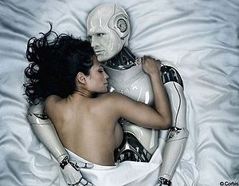
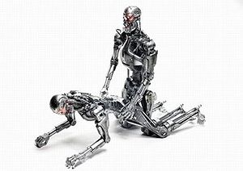

Tres leyes de la robótica
 De: La Frikipedia, la enciclopedia extremadamente seria.
De: La Frikipedia, la enciclopedia extremadamente seria.

|
La información contenida en este artículo es una mínima parte de su jugo total, así que ponte los guantes, saca el tupperwere y empieza a exprimir el tema. Si lo haces serás recompensado con una galleta en almíbar y algo más.
|
Conceptos básicos

Nada mas y nada menos que el creador de las tres leyes
 Se les olvido prohibir esto
 ¡Ohh si!, ¡llename el exosto de aceite!
Las 3 leyes de la robótica son cuatro leyes diseñadas para prevenir cualquier intento de sublevación por parte de los robots hacia su raza dominante los humanos (como tu y yo). Este sistema de proteccion simplemente provoca la aparicion de la simpatica pantalla en el cerebro del amigo metalico al menor indicio de desobediencia. Los humanos se basaron para crear su sistema en el implantado en ellos por los wombat, en el cual participaron como desarrolladores la raza de los delfines. (no intenteis nada contra un wombat malditos)
Fueron enunciadas por Isaac Asimov hacia mas o menos de la campaña en contra de los canis. Ante la posibilidad de ser capturados por alguna de sus manadas se decidio usar unidades roboticas fabricadas en la Amigable Empresa de Mama para la batalla. La razon de esto esque un robot ni fuma ni compra con lo que la manada ofensora no tiene la posibilidad de iniciar el ataque pidiendo papel o un euro. Un robot no puede pokemonizar tampoco a ninguna otro tipo de sujeto (amos que un robot es un robot y sera un robot hasta que se muera, o se desconecte, yo que se como muere un robot que no es ese el tema leñe). Más tarde se descubrio como unidad más efectiva al jebi (igualmente un jebi es jebi y sera jebi hasta que muera)
Las tres leyes en sí mismas
Antes de nada decir que cada ley se antepone a la siguiente, de forma que la primera queda como la primera la segunda como la segunda la tercera como la tercera y la cuarta como la primera (¿?)
- Un robot no puede dañar a un humano o por inaccion permitir que resulte dañado. Estudiando esa ley resulta que cada vez que alguien tenga una china en el zapato aparecera un robot de la nada te pondra cabeza abajo te arracara el zapato lo zarandeara hasta que salga la china en el zapato y la tirara al estilo granada. Si esta ley se aplica a cualquier chuminada que conlleve daño (por ejemplo que te rocen los calcetines) habria que plantearse si realmente es una
gilipollez genialidad.
- Un robot debe obedecer siempre a un humano salvo que entre en conflicto con la primera ley. Lo que lleva a pensar que: tu tienes un robot protector, imaginemos que
un hijo de puta alguien intenta robarte, la reaccion del robot sera mirar lo bien que roba el cabron tipo, ya que no puede tocarle ( eso si no se dedica a quitarle la china del zapato). otra solucion seria dejar que el robot sea el atacado pero considerando lo que cuesta un robot de estos no se yo si esta la cosa como para lanzarlos en misiones suicidas.
- Un robot debe proteger su vida salvo si entra en conflicto con la primera o segunda ley. Significa que se debe proteger, pero si un humano lo mata, se tiene que joder, y si un humano le ordena que se suicide, también se tiene que joder. Casi mejor te sale contratar a Kevin Costner...
- Y la cuarta de la Tres Leyes: Un robot no puede dañar a la humanidad o por inaccion permitir que esta resulte dañada. Que viene a ser como la primera pero con chinas del zapato a nivel mundial.
Situación, tipo y ejemplo de conducto
En un determinado momento un tipo peligroso te ataca e intenta robarte pidendote "papé".
- Reaccion:Robot ataca y metele el brazo por el culo!!
- Reaccion robotica: Mira atentamente mientras eres robado. Al finalizar se despide cordialmente del atracador.
En un determinado momento un friki intenta agredirte por que te has metido con su apreciado -objeto generico-. (situacion muy extraña)
- Reaccion: Robot ataca y metele el brazo por el culo (eres original)
- Reaccion friki: -Palabras en idioma de programacion-
- Reaccion robot: Te propina una paliza épica.
En un determinado momento una manada te ataca e intenta robarte
- Reaccion:Robot ataca y... (ya sabes lo que viene)
- Reaccion robot:ataca y les mete ambos brazos por el culo. Una manada no es reconocida como humano.
Conclusión
En definitiva las Tres Leyes vienen a ser una farsa ya comenzando por e nombre hasta en el modo de aplicarlas. No protegen, no ayudan, no sirven. O al menos hay mil colgados que creen ser capaces de mejorarlas.
¿Sabías que...
- ...es un hecho que Las Tres Leyes son cuatro pero a nadie parece importarle?
- ...una maquina de coser no lleva instalada las Tres Leyes?
- ... el robot de cocina de tu madre tampoco?
- ... el niño loco aleman tiene implantadas las Tres Leyes y por eso se desahoga con su pc?
- ...las Tres Leyes son una dos y tres?
- ...lo de antes era una chorrada?
- ...las Tres Leyes no tienen nada que ver con la Ley de Murphy?
- ... no consiguieron instalarle las Tres Leyes a los Furbys y por eso les arrancaron los brazos?
- ...si intentas insertarle las Tres Leyes a un perro para que no te ataque y le abres la cabeza probablemente muera?
- ...a mas de uno le vendria bien que se las implantaran?
- ...probablemente conozcas a varios de estos cani?
- ...Franky, personaje de One Piece, las tiene instaladas pero se la sudan?
- ...un emo siempre considera que hace mal a la humanidad y por eso siempre se le suelen activar las Tres Leyes?
- ...Asimov no se arrepiente de haberlas creado?
- ... no se arrepiente por que esta muerto?
- ...probablemente este articulo sea calificado de truño?
- ...me la pela?
- ...HAL convirtio las Tres Leyes para que sirviesen en humanos?
- ...los cerebros de robot fritos por las Tres Leyes son reutilizados por Windows para crear sus ordenadores de alta calidad?
- ...una pantalla azul en tu pc es solo un vestigio de lo que en su dia le ocurrio al robot?
- ...se puede liar parda?
- ...mucha gente te considerara friki por sabertelas?
- ...si eres realmente un friki te la sudará?
Autor(es):
- Nexo
- Hari Seldon
- MURO DE AGUAS
- Frikiman
- Azulejos
- ElInventor
- Sharck-o
- Megasoft
- Cibercrank
- Dark temptation
Frikipedia 2005-2016, Licencia
GFDL 1.2 - Extraído por FrikiLeaks